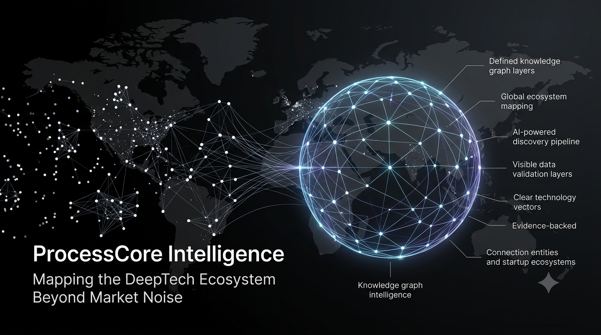

0
Validated / Enriched Entities (Golden DB)
Experimental intelligence platform for discovering emerging technologies, startups and research ecosystems before they become mainstream.

Mapping governmental frameworks, research labs, deep-tech startups, and grant architectures across Europe and Asia.
Agent-assisted web frontier discovery without static predefined lists.
Multi-source cross-verification with traceable evidence provenance.
Deep structural linking across tech vectors and grant recipients.
Deterministic JSON feeds and structured data pipelines for future B2B integration.
Unlike traditional static scrapers, every record in ProcessCore Golden DB includes verified provenance chains:
Traceable processing history and audit-ready data streams.
Direct cryptographic or temporal link to original provenance.
Configurable storage policies and compliance safeguards.
Built-in checkpoints for high-assurance entity validation.
Early discovery of emerging spin-outs and research labs.
Monitoring public research, subsidies, and high-tech innovation ecosystems.
Mapping global technology partners and suppliers.
Tracking international research output and grant dependencies.
Loaded live from entities.json. Topic: "Where do new AI companies emerge?"
| Actor Name (Official Web) | Region / TLD | Technologies / Signal | Score |
|---|---|---|---|
| Snorkel AI ↗ | Global/Tech | Machine Learning, Natural Language Processing Signal: Prompting methods |
0.98 |
| URMC ↗ | EDU | Machine Learning, AI-based tech Signal: Partnership with AI lab |
0.95 |
| io.net ↗ | NET | Machine Learning, Distributed Computing Signal: Delivers libraries |
0.94 |
| NSF AI Institute (IAIFI) ↗ | ORG | Artificial Intelligence, Physics, Deep Learning Signal: Advancing physics |
0.96 |
| Duke University Materials Computation Group | Global/US | Artificial Intelligence, Materials Science Signal: Research in Autonomous Systems |
0.91 |